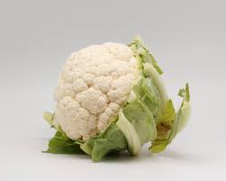

About clay soil
Clay soils are fine-textured, hold moisture and nutrients well, but drain slowly and can compact. With good management (organic matter, drainage), many field and vegetable crops perform well.
Recommended crops for clay soil
Rice (paddy)
Seed rate ~75 kg/ha (~30–35 kg/acre). Water-loving: suits puddled clay fields.

Soybean
Seed rate ~25–30 kg/acre. Performs well in heavier soils with good drainage.

Wheat
Seed rate ~40–55 kg/acre. Clay can hold nutrients for cereals but manage compaction.

Maize
Seed rate typically 8–15 kg/acre (varies by planting density/variety). Good when soil is well-tilled and drained.
Broccoli
Seed rate ~0.2–0.25 kg/acre (nursery raising). Good in cool climate clay soils with drainage.
Cabbage
Seed rate ~0.2–0.25 kg/acre (nursery raising). Prefers cool, moist clay soils with drainage.

Cauliflower
Seed rate ~0.2–0.25 kg/acre (nursery raising). Best in cool season, moist fertile clay soil.

Tomato
Seed rate ~0.1–0.15 kg/acre (nursery raising). Many vegetables grow in clay with raised beds, organic matter and careful irrigation.
Cover/soil-improving plants
Daikon radish, cowpea, and mustard ("clay-busters") help break compaction and add organic matter between seasons.
Crop growth durations (typical)
| Crop | Typical days to maturity | Climate |
|---|---|---|
| Rice (paddy) | 90–150 days | Warm, humid; flooded/irrigated |
| Soybean | 90–120 days | Warm, well-drained |
| Wheat | 100–130 days | Cooler, irrigated or timely rains |
| Maize | 80–140 days | Warm, moderate moisture |
| Broccoli | 70–100 days | Cool, moist conditions |
| Cabbage | 90–120 days | Cool, moist |
| Cauliflower | 85–120 days | Cool, moist |
| Tomato | 70–120 days (from transplant) | Warm to moderate |